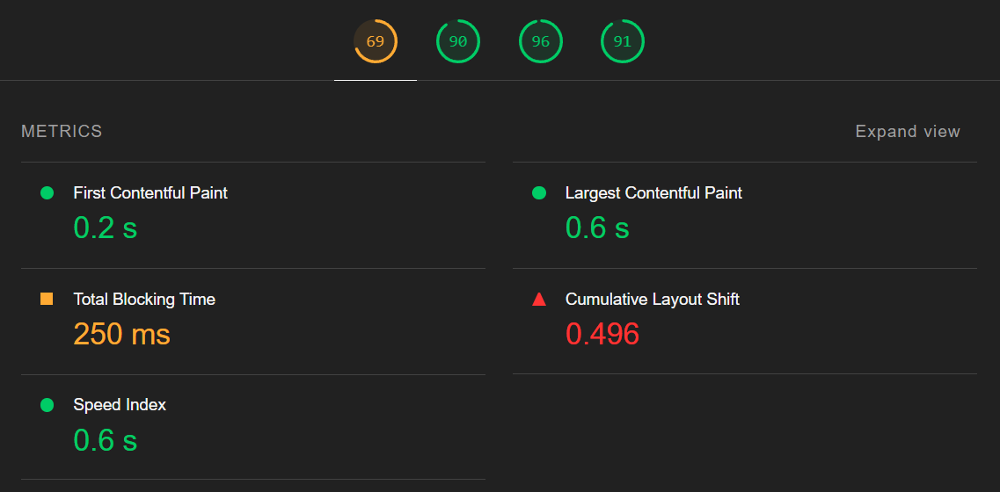
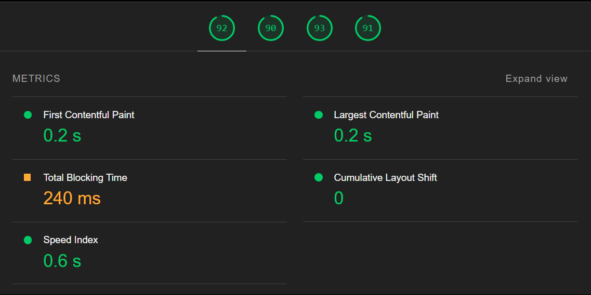

There were 8 images in a webpage, without height & width attributes

Conclusions :
- There was significant decline in performance of the webpage (rated : 69).
- There was a big CLS (Cumulative Layout Shift), which happens due to shift in layout while loading.
- CLS happened, because browser decided the layout of webpage at runtime, by figuring out original dimension of each image.
- Also images were by default large in dimension, so they took a little longer to load, i.e. more LCP (Largest Contentful Paint).
There were 8 images in a webpage, with defined height & width attributes

Conclusions
- Performance boosted just by giving each image a fixed height & width, in relative or absolute unit.
- CLS just dropped to 0, as every thing in layout was pre-defined, due to provided dimensions of images.
- Gave images a smaller dimension, so they took little less time to load. So slightly smaller LCP (Largest Contentful Paint).